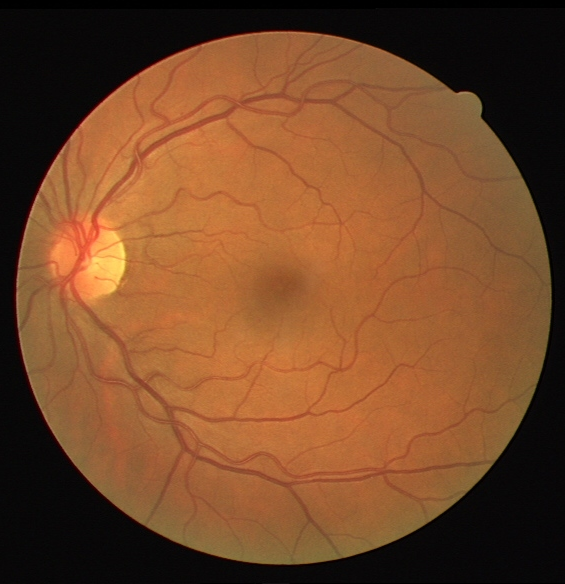
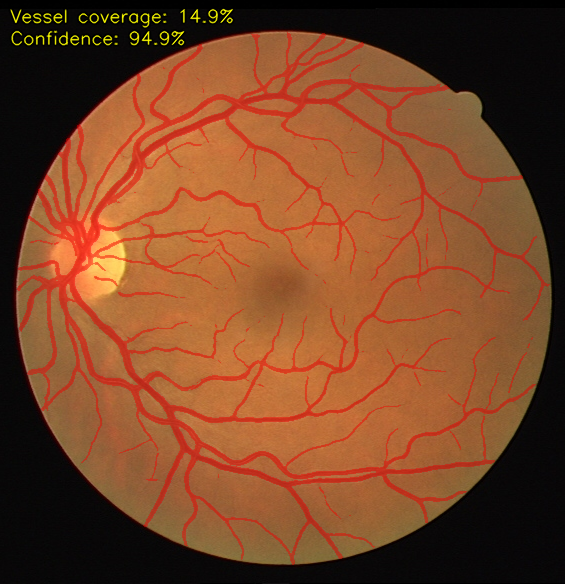

A from-scratch PyTorch U-Net that segments blood vessels in retinal fundus images, trained on the DRIVE dataset and served through a FastAPI overlay endpoint.


RGB fundus image └─ green channel # vessels have highest contrast here └─ CLAHE (clipLimit=2.0) # local contrast enhancement └─ U-Net (4 enc + 4 dec, skip connections) └─ 1×1 conv → sigmoid → vessel probability map
0.5·BCE + 0.5·Dice — the Dice term handles the
~10:1 background/vessel imbalance.pip install -r requirements.txt
python train.py --epochs 150 --patch-size 48 --patches-per-epoch 8000
python evaluate.py --checkpoint checkpoints/unet_drive.pth
uvicorn app:app --port 8000 # then open http://localhost:8000/
DRIVE — Digital Retinal Images for Vessel Extraction, via Kaggle (original: grand-challenge).